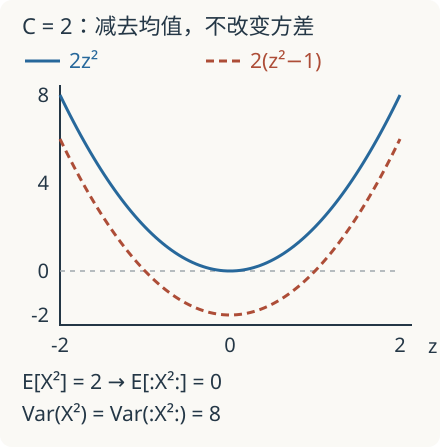

本页目录
数学前沿 II · 奇异 SPDE：为什么随机方程需要重整化
本讲从 Gaussian 平方的完整计算进入重整化，再解释正则性结构解决什么问题。先修：分布与弱导数、Sobolev 空间、Itô 积分。后半讲需要 Hölder/Besov 正则性和不动点方法；树与重构定理在此说明结构，不替代原论文证明。
先把噪声磨平再计算，为什么答案还会不断漂走？
1. 难点出现在乘法，而不只是随机性
粗糙界面高度常用形式方程
描述，其中 \(\xi\) 是时空白噪声。这是 KPZ 方程的一种系数归一化。白噪声不是每一点都有普通数值的函数：它通过对测试函数的积分定义，满足 \(\mathbb E[\xi(\varphi)\xi(\psi)]=\int\varphi\psi\)。
热核能平滑输入，却未必平滑到可以逐点相乘。在一空间维，相关随机卷积的空间正则性约为 \(1/2\) 以下，导数约为 \(-1/2\) 以下；因此 \((\partial_xh)^2\) 不能按普通函数平方直接解释。先卷积光滑噪声 \(\xi_\delta\) 会得到可计算方程，但当尺度 \(\delta\downarrow0\)，额外项可能发散。Hairer 的 KPZ 工作建立了可控制近似的解概念，不能用“网格够细就好”代替。KPZ 原始论文
2. 一个能算到底的模型：平方的均值从哪里来
令 \(Z\sim N(0,1)\)，\(X=\sqrt C\,Z\)，其中 \(C>0\) 是方差。Gaussian 矩给出 \(\mathbb E[X^2]=C\)、\(\mathbb E[X^4]=3C^2\)。定义 Wick 平方
它减去已知的自收缩项，均值变为零。然而
减掉常数不会改变方差。若 \(C\) 随分辨率增长，中心化后的随机量仍可能越来越大。“均值归零”既不是“噪声消失”，也不是“已经证明收敛”。
更系统的定义来自生成函数
比较系数得到 \(:X^3:=X^3-3CX\)。三次非线性的修正是线性项，不是简单减一个常数。这个代数计算开始解释为什么重整化后的随机方程会出现新的低阶项。

3. 从单个随机数到随机分布
真正的 SPDE 涉及彼此相关的中心 Gaussian 场 \(X_\delta(x)\)。记协方差为 \(G_\delta(x,y)\)；平稳情形下 \(C_\delta=G_\delta(x,x)\) 不依赖 \(x\)。Gaussian 配对公式给
因此，对光滑紧支撑测试函数 \(\varphi\)，中心化平方积分的方差是
这次控制对象是整个协方差核。二维对数型奇点的平方局部可积，因为 \(\int_0^1r(\log r)^2dr<\infty\)；这说明为何某些 Wick 场在测试函数下可能有良好极限，即使逐点方差发散。要证明收敛，还需同一耦合下不同截断的协方差估计和 Cauchy 性，上式本身并未完成证明。下一步可在Wick 平均与 L² 极限中完整证明一个 Fourier 场的常数测试函数配对收敛：先利用正交性消去交叉项，再估计跨截断的独立尾和。这仍不替代任意测试函数下的随机分布收敛。
反过来，若把场换成所有位置共享同一个 \(X_\delta\)，则积分只是 \((\int\varphi)(X_\delta^2-C_\delta)\)，方差仍随 \(C_\delta^2\) 发散。空间平均不是自动有效；相关结构决定结果。
4. 正则性结构怎样扩充 Taylor 展开
光滑函数在点 \(x\) 附近用 \(1,(y-x),(y-x)^2\) 描述。奇异方程需要额外“基元”：噪声符号 \(\Xi\)、热核积分 \(\mathcal I(\Xi)\)，以及由它们形成的非线性组合。给每个符号分配正则性次数，组成分级空间 \(T=\bigoplus_\alpha T_\alpha\)。
形式符号还不是随机场。一个模型用 \(\Pi_x\) 将符号解释为实际分布，用 \(\Gamma_{xy}\) 将点 \(y\) 的展开换到点 \(x\)。解先写成取值于 \(T\) 的局部展开 \(F(x)\)，再由重构算子 \(\mathcal R\) 合成分布。重构定理的关键估计形如
其中 \(\varphi_x^\lambda\) 是在 \(x\) 附近按所选尺度缩放的测试函数。它要求局部展开在小尺度上一致拼接；不是只给符号起名字。对模型重整化、证明模型收敛，再利用解映射的连续性，才把光滑近似连到极限解。Hairer 的正则性结构理论
以三维 \(\Phi^4\) 动力学的形式式子 \(\partial_tu=\Delta u-u^3+\xi\) 为例，光滑近似会加入依赖截断的线性反项。Wick 三次方提示其中一种来源，但完整 \(\Phi^4_3\) 还涉及更高阶修正；本讲的单个 Gaussian 计算并未证明该方程存在唯一解。
5. 为什么必须检查“次临界”
热方程按时间权重 2、空间权重 1 缩放。\(d\) 维空间的时空白噪声正则性约为 \(-(d+2)/2\)，热核积分提升 2，故线性随机卷积约有 \(\alpha=(2-d)/2\) 的正则性，严格估计通常还要略减一点。
三次项经积分后的形式次数为 \(3\alpha+2\)。要比起始粗糙度更好，要求 \(3\alpha+2>\alpha\)，即 \(d<4\)。这是 \(\Phi^4\) 的次临界尺度判断；\(d=4\) 在临界边界，不能把同一套局部次临界结论直接搬过去。次数账本给出路线，乘法、随机估计与重构才完成严格工作。
完整静态后备：实验只画 \(X^2=Cz^2\) 与 \(:X^2:=C(z^2-1)\) 两条确定性曲线，\(z\) 对应标准 Gaussian 输入；不是 SPDE 求解器。先预测增大 \(C\) 后，中心化曲线是否会变平，再核对：
| \(C\) | \(\mathbb E[X^2]\) | \(\mathbb E[:X^2:]\) | 两者的方差 |
|---|---|---|---|
| 1（默认） | 1 | 0 | 2 |
| 2 | 2 | 0 | 8 |
| 4 | 4 | 0 | 32 |
| 8 | 8 | 0 | 128 |
| 16 | 16 | 0 | 512 |
例如 \(C=2,z=0\) 时，两条曲线的输出为 \(0,-2\)；\(z=1\) 时为 \(2,0\)；\(z=2\) 时为 \(8,6\)。均值为零不意味着曲线处处为零，也不意味着每次抽样后的经验均值精确等于零。
6. 两道迁移题
题 1。 \(X\sim N(0,C)\)。求 \(Y=X^3-3CX\) 的均值与方差，判断它是否因为中心化而在 \(C\to\infty\) 时保持有界方差。
独立作答后核对题 1
奇数矩为零，所以 \(\mathbb EY=0\)。用 \(\mathbb EX^6=15C^3\) 得 \(\mathbb EY^2=15C^3-6C\cdot3C^2+9C^2\cdot C=6C^3\)。方差仍发散；去除 Gaussian 自收缩与获得普通随机变量极限是不同要求。
题 2。 两种近似采用反项 \(C_\delta\) 与 \(C_\delta+c\)，其中 \(c\) 是固定常数。如果第一种 Wick 平方收敛到随机分布 \(Y\)，第二种会收敛到什么？这说明什么？
独立作答后核对题 2
第二种是第一种减 \(c\)，所以极限为 \(Y-c\)。与测试函数配对时，相差 \(-c\int\varphi\)。重整化可以留下有限参数选择；必须说明归一化约定和物理参数如何校准，不能只要求“去掉无穷大”便宣称所有近似得到完全同一个方程。
7. 从个别修正到系统方法
正则性结构的代数重整化用装饰树组织嵌套的奇异乘积，避免每个方程都凭经验猜反项。2025 年首发、2026 年修订的 flow 方法研究进一步核对其重整化与 BPHZ 方案的联系。这是方法之间的结构比较，不等于所有临界或超临界方程已经解决。
以下一手来源均于 2026-09-08 实际访问；列出原始日期与所查状态，未作最新工作的穷尽检索。
- Hairer，Solving the KPZ equation：首发 2011-09-30，所查修订 2012-07-26；严格的路径式解与近似理论。
- Hairer，A theory of regularity structures：首发 2013-03-20，接受稿修订 2014-02-15；重构、随机模型与重整化解理论。
- Bruned、Hairer、Zambotti，Algebraic renormalisation of regularity structures：首发 2016-10-26，修订 2018-11-19；系统构造装饰树与 BPHZ 型代数重整化。
- Bruned、Minguella，Renormalisation in the flow approach for singular SPDEs：首发 2025-04-07，修订 2026-05-24；所查页面标注待刊 Annals of Probability，比较 flow 与正则性结构的重整化方案。
速查：重整化不止是减均值
| 对象 | 可验证公式 | 不能跳过的下一步 |
|---|---|---|
| 单个 Gaussian | \(:X^2:=X^2-C\)，方差 \(2C^2\) | 中心化不保证逐点收敛 |
| 随机场 | \(\operatorname{Cov}(:X(x)^2:,:X(y)^2:)=2G(x,y)^2\) | 控制测试函数下的核与跨截断差 |
| 正则性结构 | 局部符号、模型、重构、重整化 | 随机模型收敛和解映射估计 |
实验说明均值与波动的区别；严格 SPDE 理论还要处理相关性、空间尺度和非线性迭代。次临界条件指出可应用理论的范围，不能被有限曲线代替。
连续训练：路径熵与随机场极限把有限模型、误差控制和退出题接成可交卷的路线。
后续练习：热核正则化与随机分布把单一测试函数推广到完整 Sobolev 范数，推导精确阈值与临界壳层，并区分有限频率图和无穷尾界。